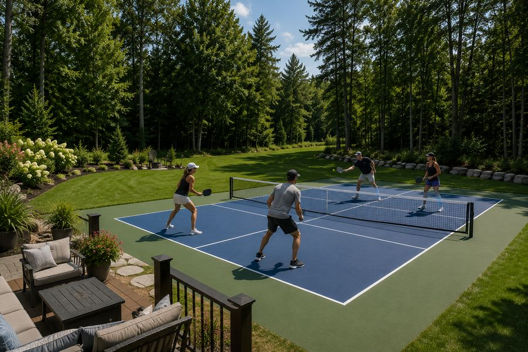
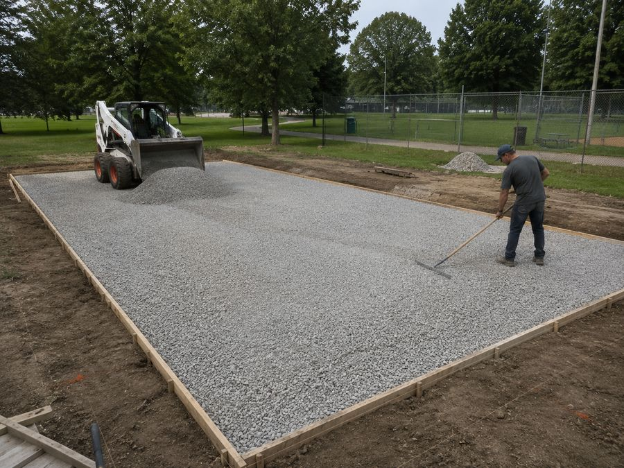
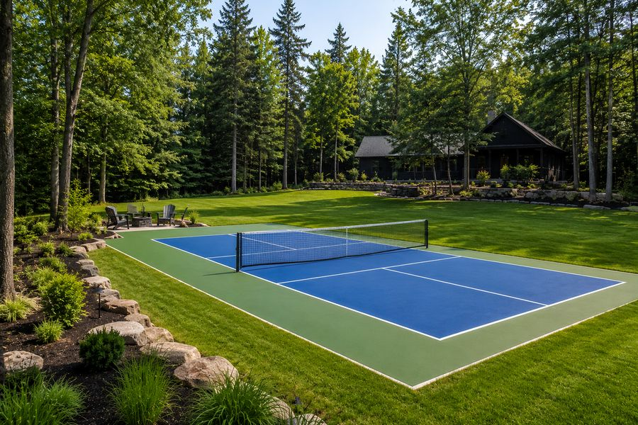
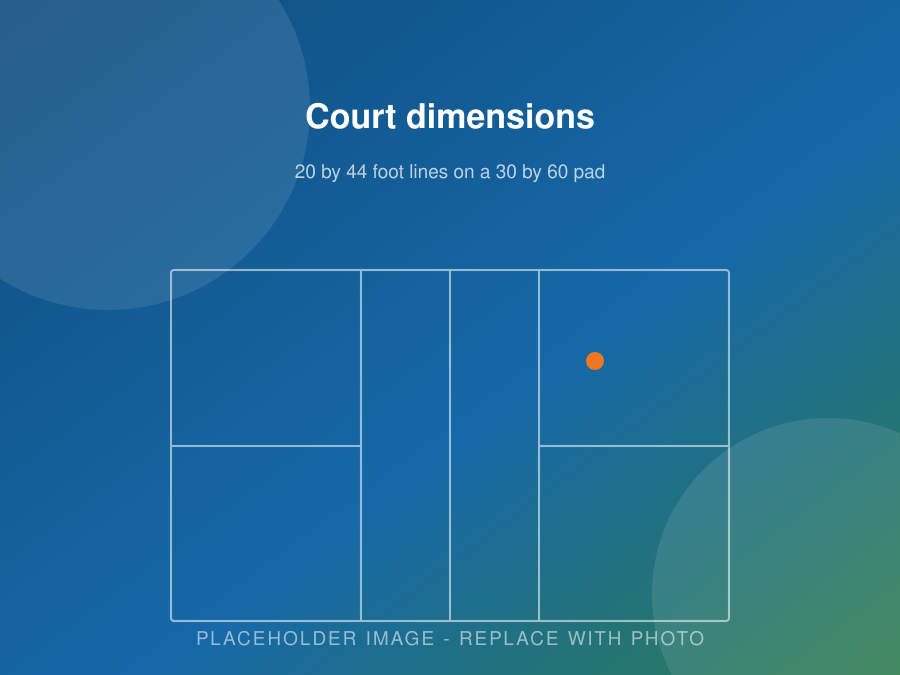

Peterborough & the Kawarthas
Pickleball Court Installation in Peterborough, Ontario
We design and build pickleball courts for backyards, schools, clubs and municipalities across Peterborough County. Built properly, from the base up, to handle Ontario winters.
- Residential and commercial court construction
- Resurfacing, repairs and tennis court conversions
- Concrete, acrylic surfacing and sport court tile
- Free on-site estimates and clear written quotes
Get Free Quote Call (705) 242-8236
Free estimates · Locally focused service · Clear, written quotes
Local Court Builders
A Court That Lasts Starts Below the Surface
Pickleball has taken off around Peterborough. You have probably seen it at Bonnerworth, at the community centres, and in more and more backyards from Lakefield to Millbrook.
A finished court looks simple. Flat slab, coloured coating, painted lines, a net. The part that decides how long it lasts is the part nobody sees: the excavation, the compacted base, and the drainage.
Get that wrong and you get standing water after every rain, cracks by the third winter, and an uneven surface that plays badly. Get it right and you have a court your family uses for the next twenty years.
That is where we spend our time. We are a local team, we build in this soil and this climate, and we do not cut corners on the parts that matter.

Why Build a Court
What a Pickleball Court Actually Gives You
We hear the same handful of reasons from almost every customer. Here they are, in the order people usually bring them up.
Everyone Plays Together
Kids, parents and grandparents can play the same game on the same court at the same time. Very few backyard additions do that. It is a big part of why the sport grew so fast.
Easy on the Body
It is a real workout without the pounding of running or the court coverage of tennis. That makes it a sport people can keep playing into their seventies and beyond.
No More Waiting for a Court
Public courts around Peterborough get busy. With a court at home you play when you want, for as long as you want, with whoever you want. No booking, no lineup.
Adds to Your Property
A well-built court is a finished outdoor amenity that buyers notice, especially on larger lots. It is honest to say it adds value. It is not honest to promise you will get every dollar back, and we will not tell you that.
Far Less Upkeep Than a Pool
No chemicals, no pump, no liner, no opening and closing every season. A rinse now and then and an annual look at the surface is usually the whole job.
Long Service Life
With a proper base and a quality coating system, a court plays well for fifteen to twenty years before it needs resurfacing. That is a long return on one project.
Free Estimate
Ready to Talk About Your Court?
Tell us about your property and we will set up a free site visit. No pressure, no sales script, just a straight answer about what your site needs.
Our Services
Pickleball Court Construction, Start to Finish
We handle the whole job with one crew and one point of contact, from the first shovel of dirt to the final coat of paint. No handing you off between three companies.
Residential Court Installation
Custom backyard courts sized to your property. Full regulation layouts where the space allows, smaller custom designs where it does not. Fencing, lighting and colour choices included in the plan.
Commercial Court Installation
Courts for schools, churches, municipalities, HOAs, condo boards, sports clubs, parks, developers, retirement communities and apartment complexes. Built for heavy daily use.
Court Resurfacing
Crack repair, low-spot filling, fresh acrylic colour coats and new regulation lines. Brings a worn court back to a safe, good-playing surface without a full rebuild.
Sport Court Tile Installation
Modular interlocking tile for outdoor and indoor courts. Fast to install, good shock absorption, and easy to swap a damaged tile without redoing the whole surface.
Court Maintenance & Repair
Cleaning, pressure washing, surface inspections, crack repairs, net replacement, fence repairs and seasonal care. Small jobs that add years to a court.
Tennis Court Conversions
One tennis court usually fits up to four pickleball courts. If the slab is sound, conversion costs a fraction of new construction. Popular with clubs, schools and condo boards.

Residential
Backyard Pickleball Courts
Most of our work is residential. We build in backyards, side yards and open rural lots across Peterborough, Lakefield, Bridgenorth, Ennismore, Keene and Millbrook.
Every yard is different. Some need grading, drainage work or tree removal before a court is even possible. Others are close to ready. We walk the site with you first and tell you what is realistic for your space and your budget.
What a residential build usually includes
- Site walk, measurements and a scale layout drawing
- Excavation, grading and drainage
- Compacted granular base built for frost
- Poured concrete slab with control joints
- Multi-layer acrylic surfacing in the colours you choose
- Regulation line striping and net post installation
- Optional fencing, lighting, windscreen and seating
Commercial
Courts for Schools, Clubs and Municipalities
Commercial courts get used hard. A backyard court might see a few hours a week. A school or municipal court can see hundreds of hours a season, in every kind of weather, by players of every skill level.
That changes the build. Thicker base, tighter drainage tolerances, heavier fencing, better lighting, and a surface system chosen for wear rather than looks alone.
Who we build for
- Schools and school boards
- Municipalities and parks departments
- Churches and community organizations
- Sports clubs and racquet clubs
- HOAs, condo boards and property managers
- Retirement communities and long-term care campuses
- Apartment complexes and land developers
- Resorts, camps and recreation facilities

Why Choose Us
What You Get When You Hire a Court Specialist
Plenty of contractors can pour a slab. Fewer understand what a sport court surface needs to play correctly and survive an Ontario winter. Here is where we focus.
We Know This Ground
Peterborough County soil goes from sand to heavy clay within a few kilometres. We check what is actually under your yard before we quote, instead of assuming.
Built for Freeze-Thaw
Southern build methods fail here. Base depth, drainage and control joints are all planned around Ontario winters, because that is what cracks courts.
High-Quality Materials
We use proven surfacing systems and weather-rated hardware, not the cheapest option available. A court is a long-term investment and we build it that way.
Professional Workmanship
Correct slope, proper compaction, full concrete cure before coating. The unglamorous steps get done properly, every time.
Clear Communication
You will know what is happening at each stage. We answer the phone, we return calls, and we do not disappear halfway through a job.
Reliable Scheduling
We tell you when we are starting and we show up. If weather moves the schedule, you hear it from us first, not after the fact.
Attention to Detail
Sharp lines, clean edges, level net posts, tidy site at the end of every day. The finish is what you look at for the next twenty years.
Satisfaction Focused
We walk the finished court with you, check everything together, and show you how to care for it. If something is not right, we come back.
Start Your Project
Get Your Free Court Estimate
We will walk your property, take measurements, check the drainage and give you an itemized written quote. It costs nothing to find out what is possible.
Our Process
How We Build a Pickleball Court
Twelve steps, in order. Nothing gets skipped and nothing gets rushed, especially the curing.
Consultation
A phone call or video chat to talk through what you are picturing, how you plan to use the court, your timeline and your budget range.
Site Evaluation
We walk the property and check slope, soil, drainage, tree cover, utility locations, equipment access and how close the nearest neighbours are.
Design & Quote
You get a scale layout with dimensions, court orientation, colour choices and any fencing or lighting, plus a written itemized quote.
Permits & Locates
We help you understand what your municipality requires and provide the drawings you need. Utility locates are called in before we dig.
Excavation & Grading
Topsoil comes off, the site is cut to depth and graded to a consistent slope so water sheds instead of pooling. Drainage goes in here.
Base Preparation
Crushed granular is placed in lifts and compacted. This is the step that prevents frost heave, and it is the step we never rush.
Concrete Work
Forms, reinforcement, net post sleeves set below finish level, then the pour, the finish, and properly placed control joints.
Curing
The slab cures fully before anything goes on top of it. Coating green concrete is the fastest way to ruin a good court.
Surfacing
Surface prep, patching, then the acrylic system built up in layers to give you grip, true bounce and colour that holds.
Line Striping
Regulation lines laid out, masked and painted in durable line paint for crisp, accurate markings.
Net & Extras
Net posts set and net tensioned to height, then fencing, lighting, windscreen, benches or anything else in the plan.
Final Walkthrough
We go over the court with you, check the surface and the lines, and leave you with a simple care routine for the seasons ahead.
Surface Options
Choosing the Right Court Surface
There is no single best surface for every project. Here is an honest look at the options we install and where each one fits.
| Surface | Best for | Strengths | Things to know |
|---|---|---|---|
| Concrete + acrylic | Most outdoor courts in this region | True bounce, good grip, wide colour range, long life | Needs full cure before coating. Resurface every 8 to 10 years. |
| Cushioned acrylic | Older players, clubs, heavy use | Extra shock absorption without changing ball bounce | Costs more than standard acrylic. Worth it if joints matter. |
| Asphalt + acrylic | Larger multi-court projects on a budget | Lower base cost, quicker to place | Moves more with temperature. Needs careful drainage here. |
| Modular sport tile | Multi-sport use, indoor spaces, existing slabs | Fast install, drains through, single tiles replaceable | Still needs a flat, sound base underneath. |
| Bare concrete | Tight budgets, temporary setups | Cheapest option, extremely durable | Harder underfoot, less consistent bounce, slippery when wet. |
Colour choices
The most common combination is a blue playing area inside green surrounds. It gives strong ball contrast and reads as a proper court. Lighter colours run cooler in summer sun. Darker colours clear snow faster in spring.
We can also do custom colour pairs and add a second set of game lines if you want the pad to double as a basketball or volleyball surface.
Court Dimensions
How Much Space Do You Need?
The painted lines of a pickleball court are 20 feet wide by 44 feet long. That is the same for every court, indoors or out, backyard or tournament.
What changes is the space around the lines. Players chase lobs and stretch for wide shots, so you need run-off room outside the boundary to play safely.
| Layout | Pad size | Area | Notes |
|---|---|---|---|
| Playing lines | 20' × 44' | 880 sq ft | The painted court itself |
| Recommended minimum | 30' × 60' | 1,800 sq ft | About 5' sidelines, 8' baselines |
| Preferred | 34' × 64' | 2,176 sq ft | Comfortable and competitive play |
| Compact backyard | 26' × 52' | ~1,350 sq ft | Not regulation, still fun for family games |
Two details that matter
- Orientation. Courts should run north to south so the low sun stays out of players' eyes at the start and end of the day.
- Slope. The pad is sloped slightly in one direction, roughly one percent, so rain sheds off. A court should never be crowned in the middle.

Common Questions
Pickleball Court Questions We Hear Most
Short, straight answers. There are more than thirty more on our FAQ page.
How much does it cost to install a pickleball court in Peterborough?
Cost depends on the size of the court, the condition of your site, the surface you choose, and extras like fencing and lighting. A simple backyard court on flat, well-drained ground costs far less than a multi-court commercial build that needs heavy excavation.
Rather than quote a number that turns out to be wrong, we walk your property, measure it, check the drainage, and give you an itemized written quote. The estimate is free and there is no obligation.
How long does a pickleball court take to build?
Most residential courts take four to eight weeks from the first day of excavation to the day you play. The single biggest factor is concrete curing time. Concrete needs to cure properly before any acrylic coating goes down, and that step cannot be rushed without risking the surface.
Commercial and multi-court projects usually run eight to twelve weeks or more, depending on size and site work.
What size of yard do I need?
A regulation playing area is 20 by 44 feet. The recommended pad around it is 30 by 60 feet, which gives about five feet on the sidelines and eight feet behind each baseline. That is 1,800 square feet in total.
If your yard cannot fit that, we can design a smaller court that still plays well for family games. We will tell you honestly what will and will not work in your space.
Will a court hold up through Peterborough winters?
Yes, when it is built for this climate. Freeze-thaw cycles and clay soil are the two things that destroy courts built with southern methods. We use a deeper compacted granular base, plan drainage carefully, and place control joints so the slab can move without cracking.
This is the part of the job nobody sees and the part that decides whether your court lasts five years or twenty.
Do I need a building permit for a backyard court?
It depends on your municipality and what you are adding. The slab itself may or may not require a permit. Fencing over a certain height, lighting, and electrical work usually do. Zoning rules on setbacks and rear yard coverage apply even when no permit is needed.
We help you understand what applies to your property before any work starts, and we provide the drawings and dimensions you need for an application.
Can you convert my old tennis court into pickleball courts?
Yes, and it is one of the best value projects in this business. A standard tennis court has room for up to four pickleball courts. If the existing slab is sound, we repair cracks, resurface, and stripe the new lines. That costs a fraction of a new build.
We do these for private homes, clubs, schools and condo boards across the region.
Is pickleball noisy? What can be done about it?
Pickleball does make a sharp, repetitive sound that carries further than people expect. It is the most common complaint neighbours raise, and in Ontario it has led to real disputes and court closures.
The good news is that it can be managed. Where we place the court matters most. Beyond that, acoustic barrier panels on the fence, a planted buffer, and quieter paddles and balls all help. We raise this early rather than leaving you to find out later.
What surface do you recommend?
For most outdoor courts in this area, a poured concrete slab with a multi-layer acrylic coating is the best combination of playability, appearance and lifespan. Cushioned acrylic is worth considering if joint comfort matters to the people using it.
Modular sport tile is a strong option for multi-sport use, indoor spaces, or when you already have a sound slab to build on.
Service Area
Where We Build Pickleball Courts
We are based in Peterborough and most of our work is within about an hour of the city. If your property is not on the list below, call anyway. We travel for the right project.
- Peterborough
- Lakefield
- Bridgenorth
- Ennismore
- Selwyn
- Douro-Dummer
- Norwood
- Havelock
- Millbrook
- Keene
- Warsaw
- Buckhorn
- Cavan Monaghan
- Otonabee-South Monaghan
- Bailieboro
- Curve Lake
- Lindsay
- Kawartha Lakes
- Bobcaygeon
- Omemee
- Cobourg
- Port Hope
- Campbellford
- Hastings
- Apsley
- Young's Point
Peterborough & Selwyn Township
Peterborough, Lakefield, Bridgenorth, Ennismore, Young’s Point and Curve Lake. These are our closest jobs and usually our fastest scheduling. Lots north of the city often have room for a full 30 by 60 foot court with space to spare.
East & North of the City
Douro-Dummer, Warsaw, Norwood, Havelock, Apsley and Buckhorn. Rural acreage and waterfront properties here suit a court well, though soil and drainage conditions change a lot from lot to lot.
South & West
Millbrook, Cavan Monaghan, Keene, Bailieboro, Otonabee-South Monaghan, Omemee, Lindsay, Bobcaygeon and the wider City of Kawartha Lakes.
Northumberland & Beyond
Cobourg, Port Hope, Campbellford and Hastings. We take on work in these areas regularly, especially commercial builds and court resurfacing.
Book Consultation
Let’s Get You Playing
Whether it is a backyard court in Ennismore or four courts at a community centre in Lindsay, the first step is the same. Tell us about the site and we will come look.
Free Estimate
Get a Free Quote
Tell us about your project. We’ll get back to you with next steps and a time for a site visit.
- No cost, no pressure site visit
- Clear written quote with the work itemized
- Straight answers about what your site actually needs
- Serving Peterborough and the surrounding townships